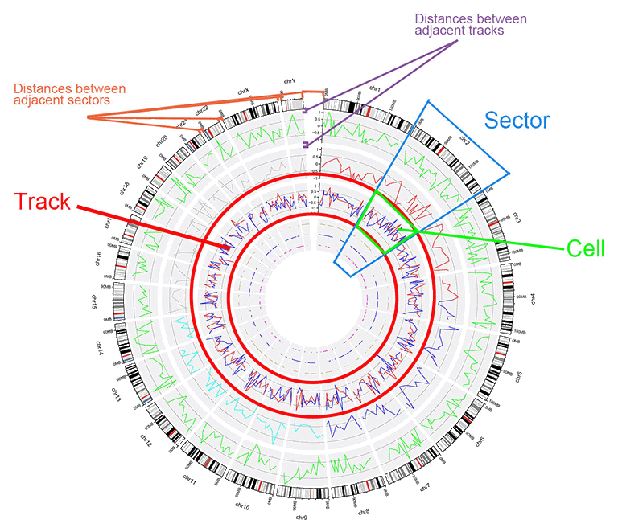
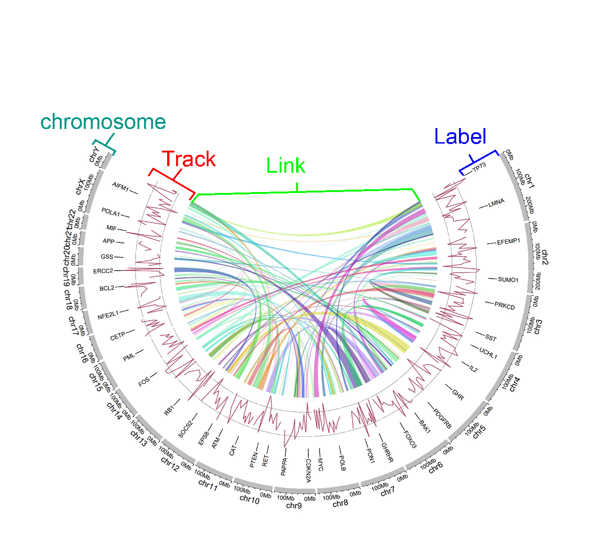
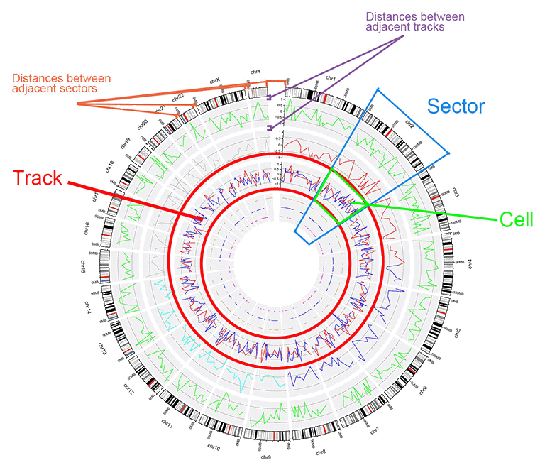
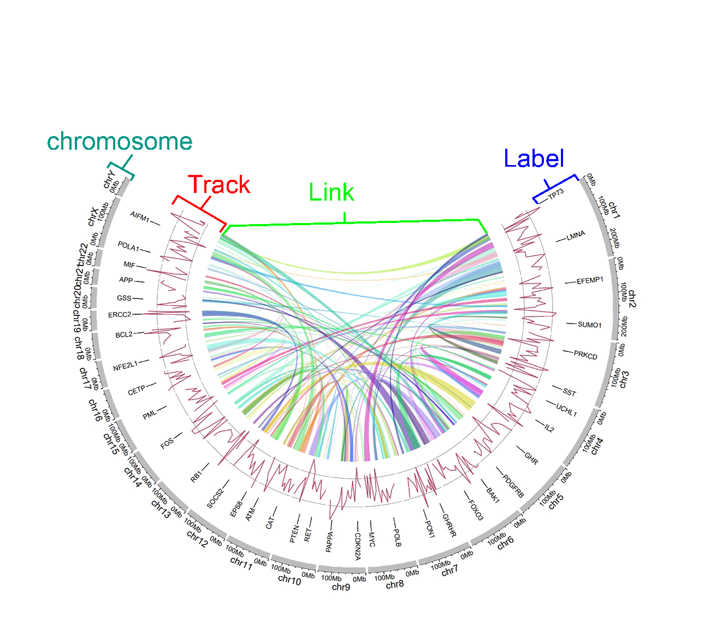

The basic structure of a Circos diagram.

Different tracks of a Circos diagram.
The Circos diagram was born in 2009, which was published by Martin Krzywinski as a visualization tool in Genome Research for comparative genomics. Since then, the Circos diagram has made frequent appearances in international renowned journals, including Nature, Science, Cell, etc.
shinyCircos is a web application for creation of Circos plot developed by Yu et al in 2017, which has been recognized by many users for its graphical user interface and ease of use.
shinyCircos-V2.0 is the updated version of shinyCircos. In shinyCircos-V2.0, we developed several advanced features, designed brand-new user interface, and fixed bugs detected in shinyCircos.
The structure of a Circos diagram is shown in the figure below.

The basic structure of a Circos diagram.

Different tracks of a Circos diagram.